5 Special Functions
This chapter describes the special functions provided by the Science Collection.
The functions described in this chapter are defined in the special-functions sub-collection of the Science Collection. The entire special-functions sub-collection can be made available using the form:
| (require (planet williams/science/special-functions)) |
The individual modules in the special-functions sub-collection can also be made available as describes in the sections below.
5.1 Error Functions
The error function is described in Abramowitz and Stegun [Abramowitz64], Chapter 7. The functions are defined in the "error.rkt" file in the special-functions sub-collection of the science collection and are made available using the form:
| (require (planet williams/science/special-functions/error)) |
5.1.1 Error Function
Erf from Wolfram MathWorld.
.
Example: Plot of (erf x) on the interval [-4, 4].
#lang racket (require (planet williams/science/special-functions/error) plot) (plot (line erf) #:x-min -4.0 #:x-max 4.0 #:y-min -1.0 #:y-max 1.0 #:title "Error Function, erf(x)")
The following figure shows the resulting plot:
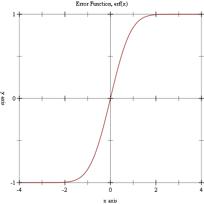
5.1.2 Complementary Error Function
.
Example: Plot of (erfc x) on the interval [-4, 4].
#lang racket (require (planet williams/science/special-functions/error) plot) (plot (line erfc) #:x-min -4.0 #:x-max 4.0 #:y-min 0.0 #:y-max 2.0 #:title "Complementary Error Function, erfc(x)")
The following figure shows the resulting plot:
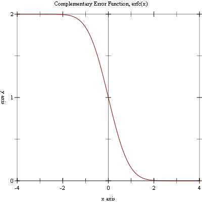
5.1.3 Hazard Function
The hazard function for the normal distribution, also known as the inverse Mill’s ratio, is the ratio of the probability function, P(x), to the survival function, S(x), and is defined as:
Example: Plot of (hazard x) on the interval [-5, 10].
#lang racket (require (planet williams/science/special-functions/error) plot) (plot (line hazard) #:x-min -5.0 #:x-max 10.0 #:y-min 0.0 #:y-max 10.0 #:title "Hazard Function, hazard(x)")
The following figure shows the resulting plot:
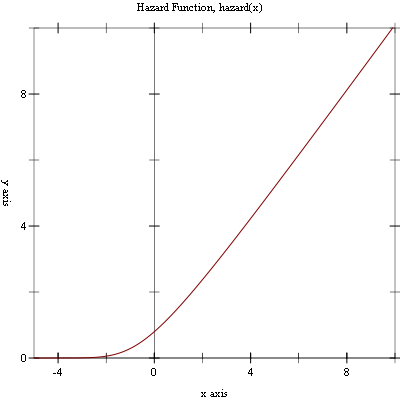
5.2 Exponential Integral Functions
Information on the exponential integral functions can be found in Abramowitz and Stegun [Abramowitz64], Chapter 5. The functions are defined in the "exponential-integral.rkt" file in the special-functions sub-collection of the science collection are made available using the form:
| (require (planet williams/science/special-functions/exponential-integral)) |
5.2.1 First-Order Exponential Integral
procedure
x : real? (unchecked-expint-E1 x) → real? x : real? (expint-E1-scaled x) → real? x : real? (unchecked-expint-E1-scaled x) → real? x : real?
.
Example: Plot of (expint-E1 x) on the interval [-4, 4].
#lang racket (require (planet williams/science/special-functions/exponential-integral) plot) (plot (line expint-E1) #:x-min -4.0 #:x-max 4.0 #:y-min -10.0 #:y-max 10.0 #:title "Exponential Integral, E1(x)")
The following figure shows the resulting plot:
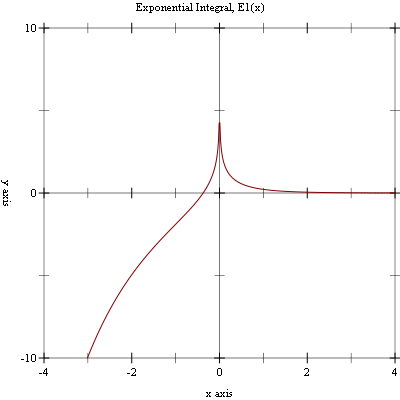
5.2.2 Second-Order Exponential Integral
procedure
x : real? (unchecked-expint-E2 x) → real? x : real? (expint-E2-scaled x) → real? x : real? (unchecked-expint-E2-scaled x) → real? x : real?
.
Example: Plot of (expint-E2 x) on the interval [-4, 4].
#lang racket (require (planet williams/science/special-functions/exponential-integral) plot) (plot (line expint-E2) #:x-min -4.0 #:x-max 4.0 #:y-min -10.0 #:y-max 10.0 #:title "Exponential Integral, E2(x)")
The following figure shows the resulting plot:
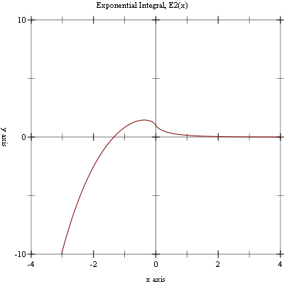
5.2.3 General Exponential Integral
procedure
x : real? (unchecked-expint-Ei x) → real? x : real? (expint-Ei-scaled x) → real? x : real? (unchecked-expint-Ei-scaled x) → real? x : real?
 .
.
Example: Plot of (expint-Ei x) on the interval [-4, 4].
#lang racket (require (planet williams/science/special-functions/exponential-integral) plot) (plot (line expint-Ei) #:x-min -4.0 #:x-max 4.0 #:y-min -10.0 #:y-max 10.0 #:title "Exponential Integral, Ei(x)")
The following figure shows the resulting plot:
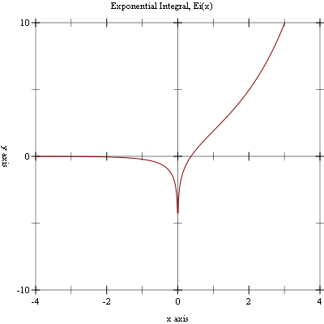
5.3 GammaFunctions
The gamma functions are defined in the "gamma.rkt" file in the special-functions sub-collection of the Science Collection and are made available using the form:
| (require (planet williams/science/special-functions/gamma)) |
Note that the gamma functions (Section 5.3), psi functions (Section 5.4), and the zeta functions (Section 5.5) are defined in the same module, "gamma.rkt". This is because their definitions are interdependent and Racket does not allow circular module dependencies.
5.3.1 Gamma Function
The gamma function is defined by the integral:
It is related to the factorial function by Γ(n) = (n - 1)! for positive integer n. Further information on the gamma function can be found in Abramowitz and Stegun [Abramowitz64], Chapter 6.
Example: Plot of (gamma x) on the interval (0, 6].
#lang racket (require (planet williams/science/special-functions/gamma) plot) (plot (line gamma) #:x-min 0.001 #:x-max 6.0 #:y-min 0.0 #:y-max 120.0 #:title "Gamma Function, Gamma(x)")
The following figure shows the resulting plot:
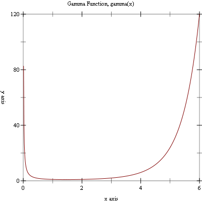
Example: Plot of (gamma x) on the interval (-1, 0).
#lang racket (require (planet williams/science/special-functions/gamma) plot) (plot (line gamma) #:x-min -0.999 #:x-max -0.001 #:y-min -120.0 #:y-max 0.0 #:title "Gamma Function, Gamma(x)")
The following figure shows the resulting plot:
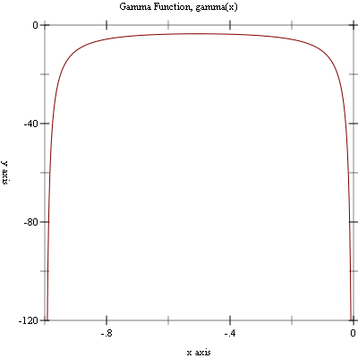
procedure
(lngamma-sgn x) →
real? (integer-in -1 1) x : real?
(unchecked-lngamma-sgn x) →
real? (integer-in -1 1) x : real?
Example: Plot of (lngamma x) on the interval (0, 6].
#lang racket (require (planet williams/science/special-functions/gamma) plot) (plot (line lngamma) #:x-min 0.001 #:x-max 6.0 #:y-min 0.0 #:y-max 5.0 #:title "Log Gamma Function, log Gamma(x)")
The following figure shows the resulting plot:
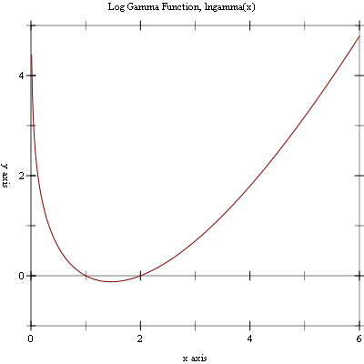
5.3.2 Regulated Gamma Function
The regulated gamma function is given by
procedure
x : (>/c 0.0) (gamma* x) → real? x : (>/c 0.0) (unchecked-gammastar x) → real? x : (>/c 0.0) (unchecked-gamma* x) → real? x : (>/c 0.0)
Example: Plot of (gammastar x) on the interval (0, 4].
#lang racket (require (planet williams/science/special-functions/gamma) plot) (plot (line gammastar) #:x-min 0.001 #:x-max 4.0 #:y-min 0.0 #:y-max 10.0 #:title "Regulated Gamma Function, Gamma*(x)")
The following figure shows the resulting plot:
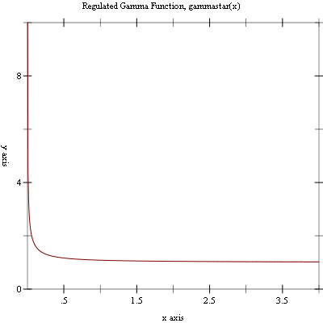
5.3.3 Incomplete Gamma Function
procedure
(gamma-inc-Q a x) → real?
a : (>/c 0.0) x : (>=/c 0.0) (unchecked-gamma-inc-Q a x) → real? a : (>/c 0.0) x : (>=/c 0.0)
for a > 0 and x ≥ 0.
procedure
(gamma-inc-P a x) → real?
a : (>/c 0.0) x : (>=/c 0.0) (unchecked-gamma-inc-P a x) → real? a : (>/c 0.0) x : (>=/c 0.0)

for a > 0 and x ≥ 0.
for a real and x ≥ 0.
5.3.4 Factorial Function
The factorial of a positive integer n, n!, is defined as n! = n × (n - 1) × ... × 2 × 1. By definition, 0! = 1. The related function is related to the gamma function by Γ(n) = (n - 1)!.
procedure
n : natural-number/c (unchecked-fact n) → (>=/c 1.0) n : natural-number/c
procedure
n : natural-number/c (unchecked-lnfact n) → (>=/c 0.0) n : natural-number/c
5.3.5 Double Factorial Function
The double factorial of n, n!!, is defined as n! = n × (n - 2) × (n - 4) × .... By definition, -1!! = 0!! = 1.
procedure
(double-fact n) → (>=/c 1.0)
n : natural-number/c (unchecked-double-fact n) → (>=/c 1.0) n : natural-number/c
procedure
(lndouble-fact n) → (>=/c 0.0)
n : natural-number/c (unchecked-lndouble-fact n) → (>=/c 0.0) n : natural-number/c
5.3.6 Binomial Coefficient Function
The binomial coefficient, n choose m, is defined as:
procedure
n : natural-number/c m : natural-number/c (unchecked-choose n m) → (>=/c 1.0) n : natural-number/c m : natural-number/c
procedure
n : natural-number/c m : natural-number/c (unchecked-lnchoose n m) → (>=/c 0.0) n : natural-number/c m : natural-number/c
5.4 Psi Functions
The psi functions are defined in the "gamma.rkt" file in the special-functions sub-collection of the science collection and are made available using the form:
(require (planet williams/science/special-functions/gamma))
Note that the gamma functions (Section 5.3), psi functions (Section 5.4), and the zeta functions (Section 5.5) are defined in the same module, "gamma.rkt". This is because their definitions are interdependent and Racket does not allow circular module dependencies.
5.4.1 Psi (Digamma) Functions
procedure
n : (integer-in 1 +inf.0) (unchecked-psi-int n) → real? n : (integer-in 1 +inf.0)
Example: Plot of (psi x) on the interval (0, 5].
#lang racket (require (planet williams/science/special-functions/gamma) plot) (plot (line psi) #:x-min 0.001 #:x-max 5.0 #:y-min -5.0 #:y-max 5.0 #:title "Psi (Digamma) Function, Psi(x)")
The following figure shows the resulting plot:
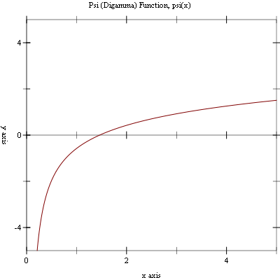
5.4.2 Psi-1 (Trigamma) Functions
procedure
n : (integer-in 1 +inf.0) (unchecked-psi-1-int n) → real? n : (integer-in 1 +inf.0)
Example: Plot of (psi-1 x) on the interval (0, 5].
#lang racket (require (planet williams/science/special-functions/gamma) plot) (plot (line psi-1) #:x-min 0.001 #:x-max 5.0 #:y-min 0.0 #:y-max 5.0 #:title "Psi-1 (Trigamma) Function, Psi-1(x)")
The following figure shows the resulting plot:
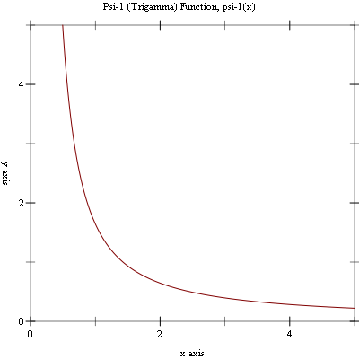
5.4.3 Psi-n (Polygamma) Functions
procedure
n : natural-number/c x : (>/c 0.0) (unchecked-psi-n n x) → real? n : natural-number/c x : (>/c 0.0)
Example: Plot of (psi-n n x) for n = 3 on the interval (0, 5].
#lang racket (require (planet williams/science/special-functions/gamma) plot) (plot (line (lambda (x) (psi-n 3 x))) #:x-min 0.001 #:x-max 5.0 #:y-min 0.0 #:y-max 10.0 #:title "Psi-n (Polygamma) Function, Psi-n(3, x)")
The following figure shows the resulting plot:
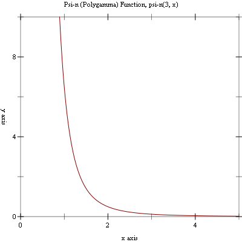
5.5 Zeta Functions
The Riemann zeta function is defined in Abramowitz and Stegun [Abramowitz64], Section 23.3. The zeta functions are defined in the "gamma.rkt" file in the special-functions subcollection of the science collection are are made available using the form:
(require (planet williams/science/special-functions/gamma))
Note that the gamma functions (Section 5.3), psi functions (Section 5.4), and the zeta functions (Section 5.5) are defined in the same module, "gamma.rkt". This is because their definitions are interdependent and Racket does not allow circular module dependencies.
5.5.1 Riemann Zeta Functions
The Riemann zeta function is defined by the infinite sum:
Example: Plot of (zeta x) on the interval [-5, 5].
#lang racket (require (planet williams/science/special-functions/gamma) plot) (plot (line zeta) #:x-min -5.0 #:x-max 5.0 #:y-min -5.0 #:y-max 5.0 #:title "Riemann Zeta Function, zeta(x)")
The following figure shows the resulting plot:
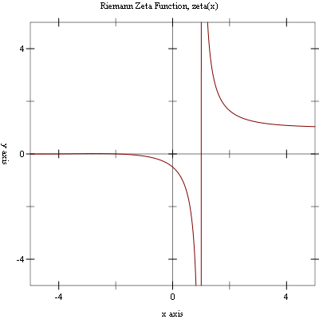
5.5.2 Riemann Zeta Functions Minus One
For large positive arguments, the Riemann zeta function approached one. In this region the fractional part is interesting and, therefore, we need a function to evaluate it explicitly.
procedure
(zetam1-int n) → real?
n : integer? (unchecked-zetam1-int n) → real? n : integer?
5.5.3 Hutwitz Zeta Function
The Hurwitz zeta function is defined by:
Example: Plot of (hzeta x 2.0) on the interval (1, 5].
#lang racket (require (planet williams/science/special-functions/gamma) plot) (plot (line (lambda (x) (hzeta x 2.0))) #:x-min 1.001 #:x-max 5.0 #:y-min 0.0 #:y-max 5.0 #:title "Hutwitz Zeta Function, hzeta(x, 2.0)")
The following figure shows the resulting plot:
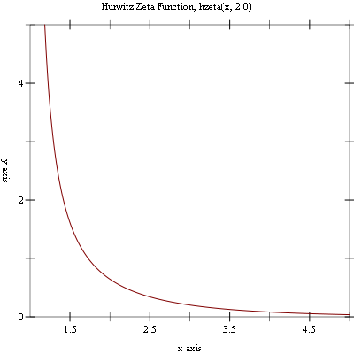
5.5.4 Eta Functions
The eta function is defined by:
Example: Plot of (eta x) on the interval [-10, 10].
#lang racket (require (planet williams/science/special-functions/gamma) plot) (plot (line eta) #:x-min -10.0 #:x-max 10.0 #:y-min -5.0 #:y-max 5.0 #:title "Eta Function, eta(x)")
The following figure shows the resulting plot:
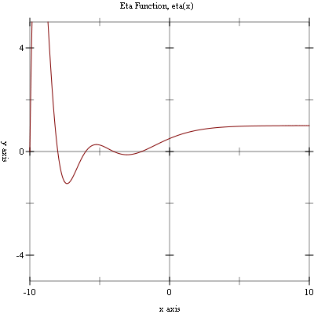
5.6 Beta Functions
The beta functions are defined in the "beta.rkt" file in the special-functions sub-collection of the Science Collection and are made available using the form:
| (require (planet williams/science/special-functions/beta)) |
for a > 0 and b > 0.